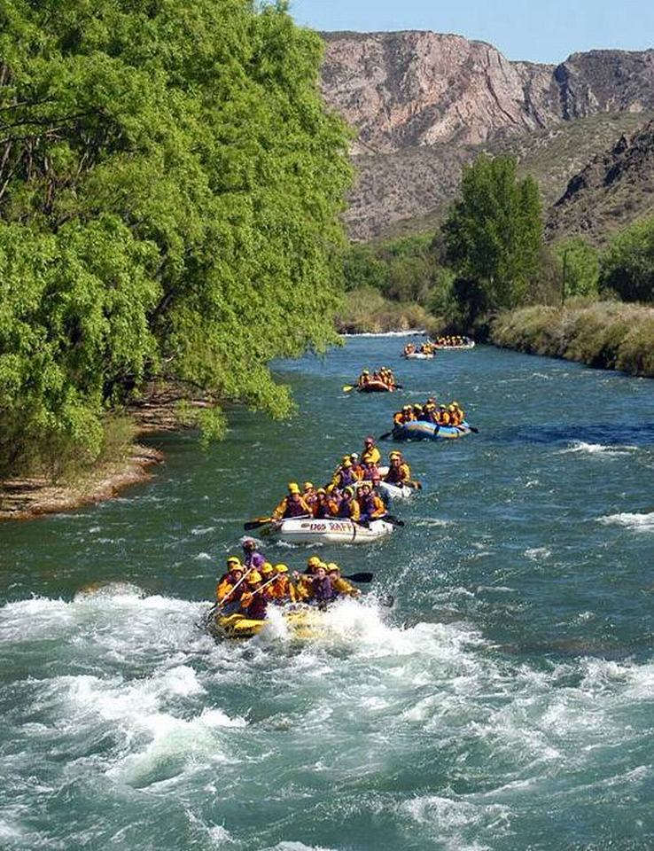
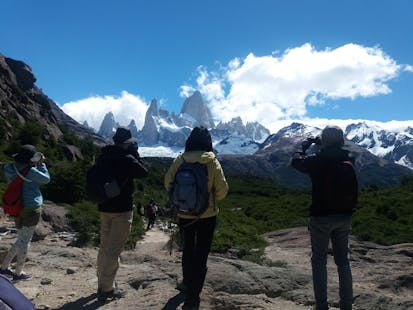
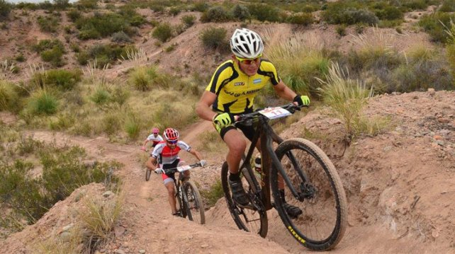
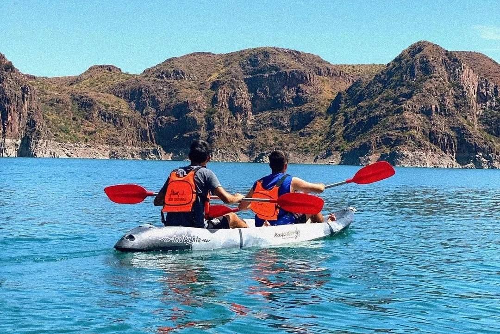

Servicios
Explora la naturaleza con nuestras emocionantes actividades al aire libre. Ofrecemos experiencias inolvidables para todos los niveles de aventura, desde descensos en ríos turbulentos hasta caminatas relajantes por senderos montañosos.
Rafting
Desafía los rápidos y siente la adrenalina mientras navegas por ríos de aguas cristalinas rodeado de paisajes impresionantes.
Trekking
Recorre senderos montañosos y disfruta de vistas panorámicas mientras te sumerges en la serenidad de la naturaleza.
Ciclismo
Pedalea a través de rutas escénicas que te llevarán por campos, bosques y montañas, adaptadas para todos los niveles de ciclistas.
Kayak
Explora lagos y ríos a tu propio ritmo, disfrutando de la tranquilidad del agua y el entorno natural que te rodea.
